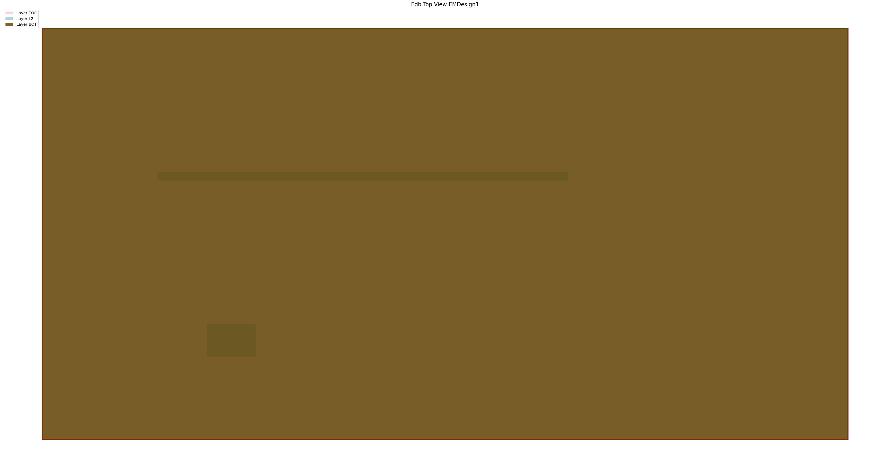

EDB simple example#
This example shows how to use the EDBCommon class to open an existing EDB project.
Perform required imports#
Perform the required imports.
[1]:
import os
import shutil
[2]:
from ansys.aedt.core import generate_unique_folder_name
[3]:
from ansys.aedt.toolkits.common.utils import download_file
from ansys.aedt.toolkits.common.backend.api import EDBCommon
Initialize temporary folder and project settings#
Initialize a temporary folder to copy the input file into and specify project settings.
[4]:
URL_BASE = "https://raw.githubusercontent.com/ansys/example-data/master/toolkits/common/"
EDB_PROJECT = "edb_edge_ports.aedb/edb.def"
URL = os.path.join(URL_BASE, EDB_PROJECT)
temp_folder = os.path.join(generate_unique_folder_name())
edb_path = os.path.join(temp_folder, "edb_example.aedb")
os.makedirs(edb_path, exist_ok=True)
local_project = os.path.join(edb_path, "edb.def")
download_file(URL, local_project)
[4]:
'C:\\Users\\ansys\\AppData\\Local\\Temp\\pyaedt_prj_UWT\\edb_example.aedb\\edb.def'
Initialize toolkit#
Initialize the toolkit.
[5]:
toolkit = EDBCommon()
Initialize EDB project#
Open the EDB project.
[6]:
load_edb_msg = toolkit.load_edb(edb_path)
C:\actions-runner\_work\pyaedt-toolkits-common\pyaedt-toolkits-common\.venv\Lib\site-packages\pyedb\generic\design_types.py:302: UserWarning: This version of the Ansys Electronics Database (EDB) is compatible with the gRPCinterface. You can enable gRPC by passing ``grpc=True`` when instantiating the Edb object.For more information please check this link: https://edb.docs.pyansys.com/version/dev/grpc_api/index.html
warnings.warn(GRPC_GENERAL_WARNING, UserWarning)
C:\actions-runner\_work\pyaedt-toolkits-common\pyaedt-toolkits-common\.venv\Lib\site-packages\pyedb\dotnet\database\components.py:1271: SyntaxWarning: invalid escape sequence '\m'
>>> edb_file = r"C:\my_edb_file.aedb"
C:\actions-runner\_work\pyaedt-toolkits-common\pyaedt-toolkits-common\.venv\Lib\site-packages\pyedb\dotnet\database\edb_data\simulation_configuration.py:2043: SyntaxWarning: invalid escape sequence '\m'
>>> sim_setup.output_aedb = r"C:\temp\my_edb.aedb"
C:\actions-runner\_work\pyaedt-toolkits-common\pyaedt-toolkits-common\.venv\Lib\site-packages\pyedb\dotnet\database\edb_data\simulation_configuration.py:2710: SyntaxWarning: invalid escape sequence '\T'
>>> config.export_json(r"C:\Temp\test_json\test.json")
C:\actions-runner\_work\pyaedt-toolkits-common\pyaedt-toolkits-common\.venv\Lib\site-packages\pyedb\dotnet\database\edb_data\simulation_configuration.py:2738: SyntaxWarning: invalid escape sequence '\T'
>>> test.import_json(r"C:\Temp\test_json\test.json")
C:\actions-runner\_work\pyaedt-toolkits-common\pyaedt-toolkits-common\.venv\Lib\site-packages\pyedb\dotnet\database\Variables.py:307: SyntaxWarning: invalid escape sequence '\d'
loc = re.search("[-+]?(\d+(\.\d*)?|\.\d+)([eE][-+]?\d+)?", variable_value)
PyEDB INFO: Star initializing Edb 18:51:49.416544
PyEDB INFO: Edb version 2025.2
PyEDB INFO: Logger is initialized. Log file is saved to C:\Users\ansys\AppData\Local\Temp\pyedb_ansys.log.
PyEDB INFO: legacy v0.69.0
PyEDB INFO: Python version 3.12.10 (tags/v3.12.10:0cc8128, Apr 8 2025, 12:21:36) [MSC v.1943 64 bit (AMD64)]
PyEDB INFO: Database edb_example.aedb Opened in 2025.2
PyEDB INFO: Cell EMDesign1 Opened
PyEDB INFO: Builder was initialized.
PyEDB INFO: open_edb completed in 8.9983 seconds.
PyEDB INFO: EDB initialization completed in 10.2487 seconds.
Get toolkit properties#
Get toolkit properties, which contain the project information.
[7]:
new_properties = toolkit.get_properties()
edb_project = new_properties["active_project"]
Save project#
Copy the current project in a new file.
[8]:
directory, old_file_name = os.path.split(edb_project)
new_path = os.path.join(directory, "new_edb.aedb")
toolkit.save_edb(new_path)
PyEDB INFO: EDB file save completed in 0.0405 seconds.
INFO - Project C:\Users\ansys\AppData\Local\Temp\pyaedt_prj_UWT\new_edb.aedb saved
[8]:
True
Get cell names#
Get cell names using PyEDB.
[9]:
toolkit.logger.info("Play with EDB")
cell_names = toolkit.edb.cell_names
toolkit.edb.nets.plot()
INFO - Play with EDB

PyEDB INFO: Plot Generation time 1.028
[9]:
(<Figure size 6000x3000 with 1 Axes>,
<Axes: title={'center': 'Edb Top View EMDesign1'}>)
Save and release EDB#
Save and release EDB.
[10]:
toolkit.close_edb()
PyEDB INFO: Close Edb file completed in 0.0230 seconds.
INFO - EDB is closed.
[10]:
True
Remove temporary folder#
Remove the temporary folder.
[11]:
shutil.rmtree(temp_folder, ignore_errors=True)